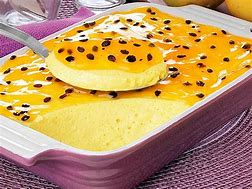

Mousse de Maracujá Delicioso
Ingredientes
- 1 lata de leite condensado
- 1 lata de suco de maracujá (medida pela lata de leite condensado)
- 1 lata de creme de leite sem soro
Modo de Preparo
- No liquidificador, bata o creme de leite, o leite condensado e o suco concentrado de maracujá.
- Em uma tigela, despeje a mistura e leve à geladeira por, no mínimo, 4 horas.
- Sirva bem gelado e aproveite!